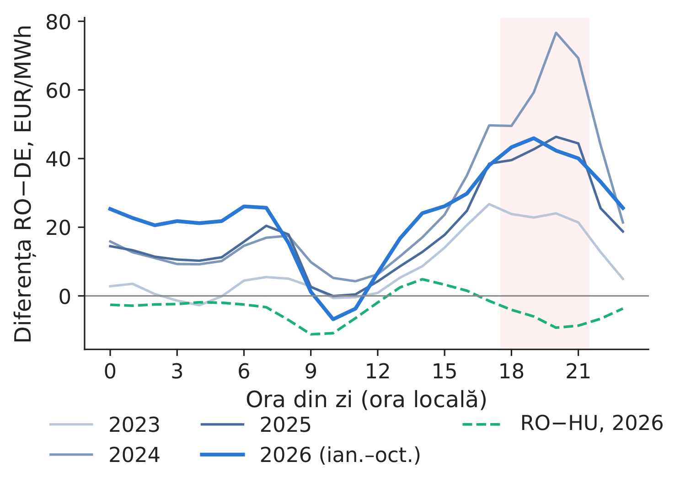
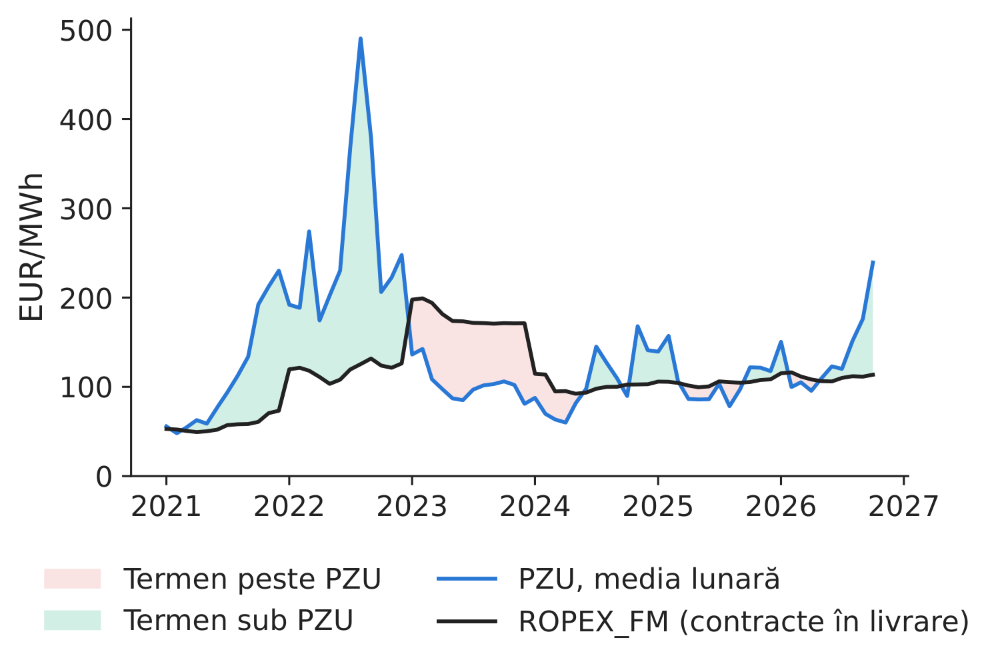
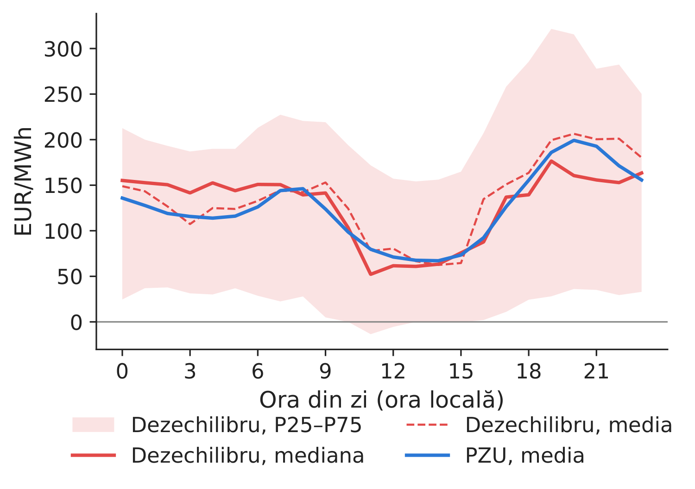
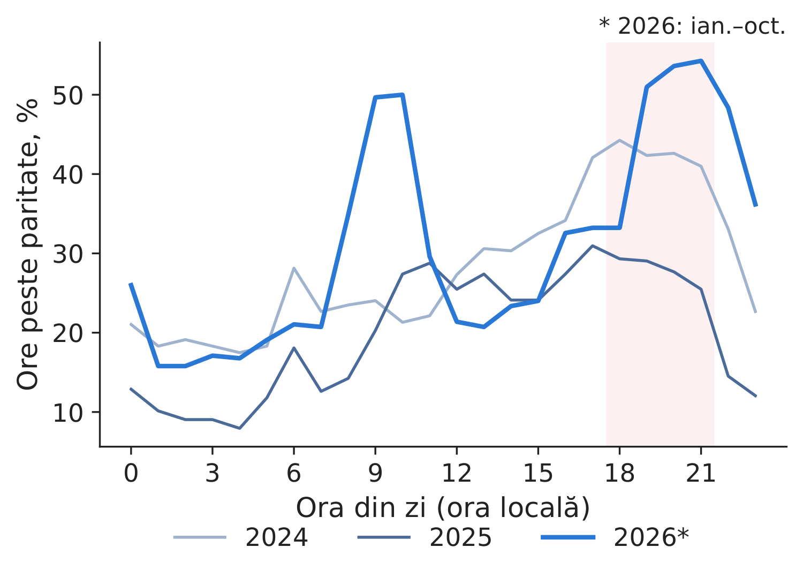
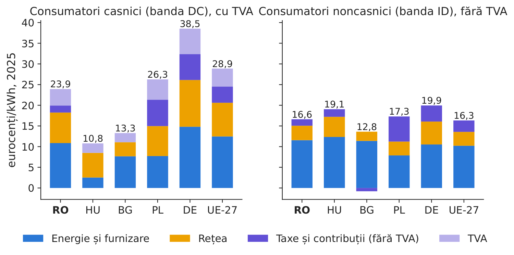
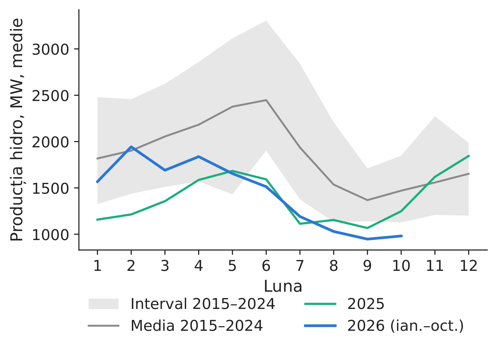
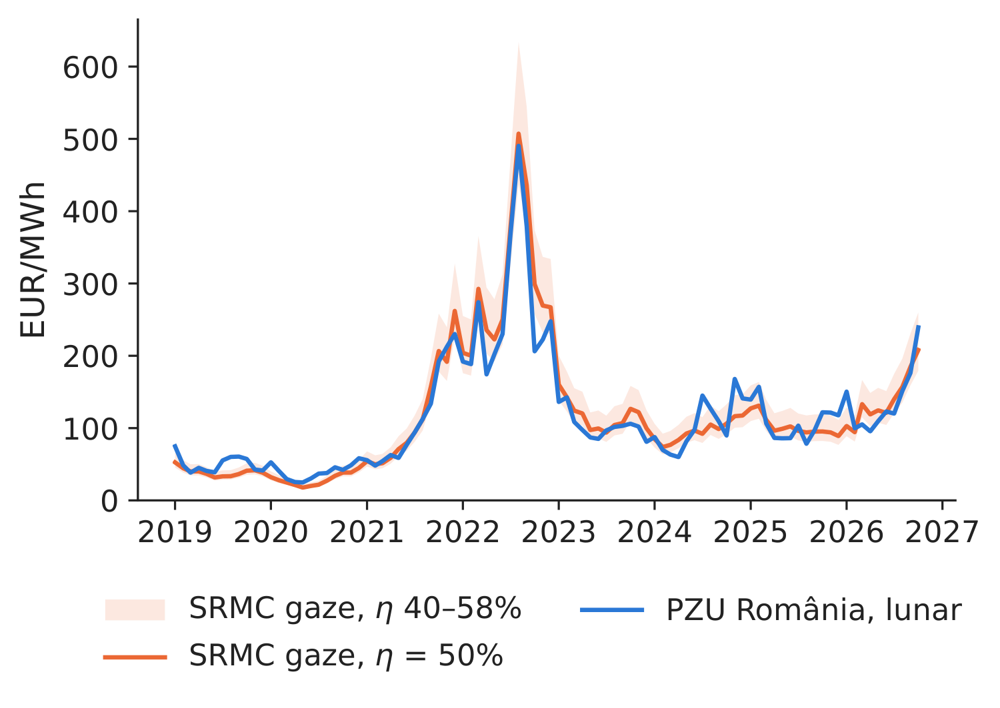
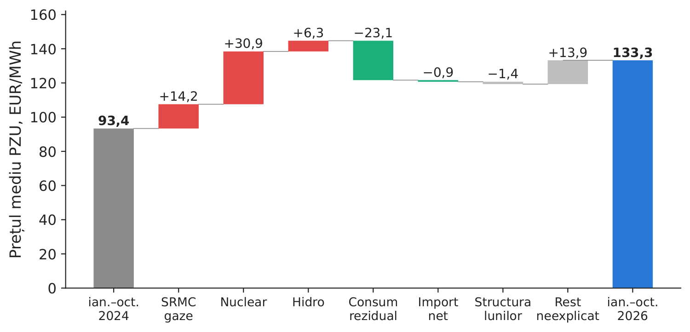

Studiul de caz 8
De ce este scumpă energia electrică în România?
Studiu de caz pe datele cursului, pe date OPCOM, Transelectrica și Eurostat — o descompunere descriptivă, fără pretenții cauzale
Prof. dr. Daniel Traian PELE
Academia de Studii Economice din București, Departamentul de Statistică și Econometrie
Academia Română, Institutul de Prognoză Economică
Lucrarea de referință
Acest studiu de caz nu se bazează pe o lucrare a grupului; este o analiză descriptivă pe date reale.
Materiale
Problema decizională
În toamna anului 2026, consiliul de administrație al unui furnizor, al unui producător sau al unui mare consumator industrial din România întreabă: de ce plătim energia electrică mai scump decît concurenții din Germania și cît va dura această situație? Răspunsul orientează politica de acoperire a riscului de preț, contractele de achiziție de energie pe termen lung (PPA, power purchase agreement) din anii următori și argumentele pentru stocare sau pentru consum flexibil.
Întrebarea
Cu cît este mai scumpă energia electrică în România (RO) decît în Ungaria (HU), Bulgaria (BG) și Germania-Luxemburg (DE-LU) și în ce ore?
- Urmărim prețul de-a lungul lanțului: contracte la termen \(\to\) piața pentru ziua următoare (PZU), administrată de OPCOM (operatorul pieței de energie electrică și de gaze naturale) \(\to\) echilibrare \(\to\) consumatorul final, și îl comparăm cu costul importului.
Ce factori observabili evoluează împreună cu prețul și ce parte din creșterea dintre 2024 și 2026 acoperă ei într-o descompunere contabilă în eșantion?
- Nu formulăm concluzii cauzale. Factorii sînt corelați între ei și, parțial, cu prețul însuși.
Datele
- Datele cursului (
data/SOURCES.md), descărcate la 4.11.2026, folosite pînă la 31.10.2026 („2026*” = ianuarie–octombrie): prețurile pentru ziua următoare; producția, consumul și fluxurile transfrontaliere ale României (energy-charts.info, pe baza ENTSO-E, rețeaua europeană a operatorilor de transport și de sistem); gazele la TTF (Title Transfer Facility, Banca Mondială, lunar); certificatele de emisii ale UE (EUA, EU allowance): licitațiile bursei europene EEX (European Energy Exchange), după ultima licitație (15.12.2025) un produs bursier pe EUA, rescalat cu raportul de preț licitație/produs din 2025 (1,032). Descărcate pentru acest studiu la 5.11.2026 de
download_c8_data.py(adresele, codurile de răspuns ale serverului și datele îndata_c8/download_log.json):- la termen: indicele OPCOM ROPEX_FM (https://www.opcom.ro/ropexfm/ro), prețul mediu ponderat cu volumul al tuturor contractelor aflate în livrare într-o lună pe piețele la termen ale OPCOM (piețele centralizate ale contractelor bilaterale PCCB-LE și PCCB-NC, piața cu negociere continuă PC-OTC și altele), convertit la cursul mediu lunar EUR/RON (leul românesc) al Băncii Centrale Europene (BCE);
- echilibrare: prețurile finale unice de dezechilibru ale Transelectrica (operatorul de transport și de sistem), la 15 minute, 10.2023–09.2026, fișiere lunare, ultima decontare (https://www.transelectrica.ro/web/tel/rezultate-decontare-piata-de-echilibrare); 16 % din sferturile de oră (numărate ținînd seama de ora de vară) nu au preț în fișiere și rămîn valori lipsă;
- cu amănuntul (descărcate la 5.11.2026): Eurostat
nrg_pc_204(consumatori casnici, banda DC, 2.500–4.999 kWh/an, în EUR și în standarde ale puterii de cumpărare, PPS),nrg_pc_205(consumatori noncasnici, banda ID, 2.000–19.999 MWh/an), semestrial pînă în 2026-S1; componentelenrg_pc_204_c,nrg_pc_205_c, anual pînă în 2025 (https://ec.europa.eu/eurostat/api/dissemination/statistics/1.0/data/).
Ce arată datele: lanțul prețurilor
PZU: o primă regională, nu națională. În 2026*, prețul mediu a fost de 137,4 EUR/MWh în România, 141,0 în Ungaria, 129,9 în Bulgaria și 114,0 în Germania-Luxemburg (Tabelul 1).
- RO–HU: în medie \(-\)1,3 EUR/MWh în 2019–2025 și \(-\)3,5 în 2026*. RO–DE: 16,9, respectiv 23,4.
- Prima față de Germania se concentrează seara: 42,9 EUR/MWh între orele 18 și 22, față de 10,5 între 10 și 16, în 2026*; seara, România a fost chiar mai ieftină decît Ungaria (\(-\)7,0; Figura 1).
La termen: cumpărarea în avans nu a fost sistematic mai scumpă. Cu aceleași ponderi lunare de volum pentru ambele prețuri, contractele aflate în livrare au costat 179,8 EUR/MWh în 2023, față de un PZU de 105,0, aproximativ cît PZU în 2024–2025 (\(-\)13,6 și \(-\)4,2) și cu 25,7 EUR/MWh sub PZU în 2026* (Tabelul 2, Figura 2).
- ROPEX_FM descrie contractele aflate în livrare, încheiate la date diferite; nu este o estimare a unei prime de risc ex ante. Deja contractat pentru 2027: 9,2 TWh, la aproximativ 123,6 EUR/MWh (raportul OPCOM din 4.11.2026).
Echilibrarea: un risc, nu un cost mediu. Pe sferturile de oră comune din 2026* (ianuarie–septembrie), prețul de dezechilibru a fost în medie de 128,1 EUR/MWh (mediana 126,2), față de un PZU de 125,6 în aceleași sferturi de oră; diferența medie 2,5, abaterea standard a diferenței 279, diferența absolută medie 152 EUR/MWh.
- Dispersia, calculată pe toate sferturile de oră, este cea mai mare în jurul prînzului: abaterea standard 313 EUR/MWh între 10 și 16, față de 286 între 18 și 22 (10.2025–09.2026; Figura 3).
Reperul prețului vecinilor (paritatea de import). Dacă luăm prețul mai mic dintre HU și BG drept reper (alocarea implicită din piața pentru ziua următoare nu presupune o plată separată pentru capacitate, deși aceasta are o valoare de raritate), PZU a depășit reperul cu peste 1 EUR/MWh în 31 % din orele din 2026* (20 % în 2025), în medie cu 30,7 EUR/MWh.
- Este cazul în 48 % din orele de seară, față de 28 % la prînz (Figura 4): în aceste ore, o restricție de import (o frontieră sau rețeaua în algoritmul bazat pe fluxuri) a fost activă; prețurile singure nu arată care.
Tabelul 1. Prețurile PZU și diferențele de preț, EUR/MWh; ultimele două coloane: RO–DE între orele 18 și 22, respectiv 10 și 16, ora locală. 2026* = ianuarie–octombrie.
| Anul | RO | HU | BG | DE-LU | RO\(-\)HU | RO\(-\)BG | RO\(-\)DE | RO\(-\)DE, 18–22 | RO\(-\)DE, 10–16 |
|---|---|---|---|---|---|---|---|---|---|
| 2019 | 50,4 | 50,4 | 47,5 | 37,7 | 0,1 | 2,9 | 12,7 | 18,8 | 16,1 |
| 2020 | 39,5 | 39,0 | 39,3 | 30,5 | 0,5 | 0,2 | 9,0 | 10,9 | 11,1 |
| 2021 | 111,4 | 113,8 | 108,7 | 96,8 | \(-\)2,4 | 2,7 | 14,6 | 21,9 | 18,2 |
| 2022 | 265,3 | 271,7 | 252,8 | 235,5 | \(-\)6,4 | 12,5 | 29,8 | 50,5 | 38,5 |
| 2023 | 103,7 | 106,8 | 103,8 | 95,2 | \(-\)3,1 | \(-\)0,1 | 8,6 | 23,0 | 4,6 |
| 2024 | 103,5 | 100,8 | 102,5 | 78,5 | 2,7 | 1,0 | 25,0 | 63,7 | 11,3 |
| 2025 | 108,2 | 108,5 | 106,9 | 89,3 | \(-\)0,3 | 1,3 | 18,8 | 43,3 | 7,3 |
| 2026* | 137,4 | 141,0 | 129,9 | 114,0 | \(-\)3,5 | 7,6 | 23,4 | 42,9 | 10,5 |
Sursa: calcule proprii pe date energy-charts.info; pînă la 31.10.2026.
Tabelul 2. Lanțul prețurilor, EUR/MWh. Termen și PZU: ponderile de volum ROPEX_FM; dezechilibrul din 2024, comparat cu PZU din aceleași sferturi de oră (2026*: ianuarie–septembrie); paritatea de import: ponderea orelor în care PZU depășește cu peste 1 EUR/MWh prețul mai mic dintre HU și BG și diferența medie în aceste ore.
| Anul | La termen | PZU | Termen\(-\)PZU | PZU, aceleași luni | Dezech. medie | Dezech.\(-\)PZU | ab. std. (dezech.\(-\)PZU) | RO \(>\) paritate, % | Diferență |
|---|---|---|---|---|---|---|---|---|---|
| 2021 | 56,9 | 108,9 | \(-\)52,1 | – | – | – | – | 48 | 15,0 |
| 2022 | 119,1 | 264,3 | \(-\)145,2 | – | – | – | – | 28 | 53,9 |
| 2023 | 179,8 | 105,0 | 74,9 | – | – | – | – | 14 | 18,2 |
| 2024 | 100,3 | 113,9 | \(-\)13,6 | 104,3 | 53,8 | \(-\)50,5 | 543 | 28 | 24,4 |
| 2025 | 104,7 | 108,9 | \(-\)4,2 | 106,9 | 105,3 | \(-\)1,6 | 359 | 20 | 17,1 |
| 2026* | 111,3 | 137,0 | \(-\)25,7 | 125,6 | 128,1 | 2,5 | 279 | 31 | 30,7 |
Sursa: OPCOM, Transelectrica, BCE, energy-charts.info; calcule proprii; pînă la 31.10.2026.

Figura 1. Diferența RO–DE pe ore, pe ani; linia întreruptă: RO–HU, 2026*.
Sursa: calcule proprii pe date energy-charts.info; 2023–2026*.

Figura 2. Contractele la termen în livrare (ROPEX_FM) și PZU, lunar.
Sursa: OPCOM (4.11.2026), BCE, energy-charts.info; 2021–2026*.

Figura 3. Prețul de dezechilibru și PZU, pe ore.
Sursa: Transelectrica, BCE, energy-charts.info; 10.2025–09.2026.

Figura 4. Ore în care PZU depășește paritatea de import (minimul HU, BG), pe ore.
Sursa: calcule proprii pe date energy-charts.info; 2024–2026*.
Cu amănuntul, gospodării. 2026-S1, cu toate taxele: 28,4 eurocenți/kWh în România, față de 28,3 în UE, 11,4 în Ungaria și 13,4 în Bulgaria; 19,2 în România în 2025-S1.
- În PPS, o corecție pentru nivelul general al prețurilor din fiecare țară, prețul din România este cu 65 % peste media UE, cel mai ridicat din grup.
- Componentele, 2025 (Figura 5): energie 10,9 eurocenți, față de 12,5 în UE; rețea 7,4 față de 8,2; taxe, inclusiv taxa pe valoarea adăugată (TVA), 5,7 față de 8,3: niciuna peste media UE. Față de BG (tarife reglementate pentru gospodării), România este mai scumpă la toate trei: energie +3,2, rețea +4,0, taxe +3,5.
- Cu amănuntul, firme (banda ID, fără TVA și alte taxe recuperabile): 17,2 eurocenți/kWh în 2026-S1, față de 15,6 în UE (+1,64). Componentele, 2025, față de UE: energie și furnizare +1,35, rețea +0,14, taxe \(-\)1,20.

Figura 5. Componentele prețului cu amănuntul, 2025, eurocenți/kWh; gospodării cu TVA, firme fără TVA.
Sursa: Eurostat nrg_pc_204_c, nrg_pc_205_c, descărcate la 5.11.2026; benzile DC și ID.
Factorii explicativi
Analiza identifică asocieri între factori și preț, fără a stabili relații cauzale.
Deficitul de seară. Producția solară la ora 13:00 a crescut de la 540 MW (2023) la 1.714 MW (2026*); România exportă acum la prînz (importuri nete de \(-\)555 MW) și importă seara (1.139 MW între orele 19 și 22, față de 106 MW în 2023).
- PZU în 2026*: 199,2 EUR/MWh seara și 77,8 la prînz, o diferență de 121,4 EUR/MWh (103,7 în 2024).
- Producția hidro mai mică. 1.387 MW în 2025 (\(-\)25 % față de media 2015–2024, de 1.857 MW) și 1.431 MW în 2026* (\(-\)25 % față de media lunilor ianuarie–octombrie, de 1.908 MW; Figura 6).
- Producția nucleară. 774 MW în 2026*, față de 1.289 MW în 2015–2024; zile sub 50 MW: 70; zile între 50 și 900 MW: 59; zile fără date: 29. Motivele producției reduse nu se regăsesc în datele noastre.
SRMC-ul centralelor pe gaze ca reper (ipoteză: unitățile pe gaze stabilesc prețul în multe ore). Costul marginal pe termen scurt (SRMC, short-run marginal cost) al unei centrale pe gaze cu randamentul electric \(\eta\):
\[\text{SRMC}_t=\frac{P^{\text{TTF}}_t}{\eta}+P^{\text{EUA}}_t\,\frac{e_{th}}{\eta}\ \ [\text{EUR/MWh}_{el}],\qquad e_{th}=\text{0,202}\ \text{tCO}_2/\text{MWh}_{th},\quad \eta=\text{0,50}.\]- Cu \(\eta=\) 0,50: 2 MWh de gaze și 0,404 tCO\(_2\) pentru un MWh de energie electrică. Octombrie 2026: TTF 86,8 EUR/MWh, EUA 85,1 EUR/t, SRMC 208 EUR/MWh; corelația lunară cu PZU în 2023–2026*: 0,77, diferența medie 0,03 EUR/MWh (Figura 7; banda: \(\eta\) între 0,40 și 0,58).
- Cuplarea piețelor și mixul. Separarea prețurilor (diferență absolută de peste 1 EUR/MWh) în 2026*: RO–HU 39 % din intervalele de tranzacționare ale pieței (MTU, market time unit), 53 % seara; RO–BG 20 % (3 % în 2025). Producția pe cărbune a scăzut de la 1.582 MW (2019) la 628 MW (2026*), iar cea pe gaze a rămas constantă (1.065 MW).

Figura 6. Producția hidro lunară, 2025 și 2026*, față de 2015–2024.
Sursa: energy-charts.info (ENTSO-E); 2015–2026*.

Figura 7. PZU lunar și SRMC-ul centralelor pe gaze (medii lunare).
Sursa: Banca Mondială, EEX, produsul EUA, energy-charts.info; calcule proprii; 2019–2026*.
Un model simplu
Regresie zilnică prin metoda celor mai mici pătrate (MCMMP), pe un eșantion cronologic, 1.1.2023–31.10.2026, estimată în eșantion (fără afirmații în afara eșantionului):
\[P_d=\alpha+\beta_1 RL_d+\beta_2 H_d+\beta_3 N_d+\beta_4 M_d+\beta_5\,\text{SRMC}_{d}+\textstyle\sum_{k=2}^{12}\gamma_k\mathbf{1}[\text{luna}(d)=k]+u_d ,\]\(RL\): consumul rezidual (consumul minus producția eoliană și solară), \(H\): hidro, \(N\): nuclear, \(M\): importuri nete, toate în GW, valori efective din aceeași zi, cunoscute la sfîrșitul zilei \(d\), dar nu la închiderea PZU (deci un model explicativ ex post, nu un model de prognoză); SRMC\(_d\) folosește doar prețuri cunoscute în ziua \(d\) (ultimul TTF lunar publicat, disponibil din ziua 6 a lunii următoare, și ultimul preț EUA dinaintea zilei \(d\)).
- Eșantion cu observații complete: 1.371 din 1.400 zile (29 eliminate din cauza datelor lipsă). Erori standard Newey–West robuste la heteroscedasticitate și autocorelare (HAC), 7 întîrzieri pe zilele reținute, și, ca verificare, grupate pe luni.
- \(R^2=0,57\); toți cei cinci coeficienți au semnul așteptat; fiecare EUR/MWh în plus la SRMC se asociază cu +0,45 EUR/MWh la preț (eroarea standard HAC: 0,06; grupată pe luni: 0,10). Cel mai mare factor de inflație a varianței (VIF): 11,1: factorii se suprapun.
Descompunerea contabilă, ianuarie–octombrie 2024 (\(A\), 305 zile) \(\to\) 2026 (\(B\), 275 zile): \(\bar P_B-\bar P_A=\sum_k\hat\beta_k(\bar x_{k,B}-\bar x_{k,A})+(\bar{\hat u}_B-\bar{\hat u}_A)\).
- +39,9 EUR/MWh (93,4 \(\to\) 133,3): SRMC gaze și carbon +14,2, nuclear +30,9, hidro +6,3, consum rezidual \(-\)23,1, importuri nete \(-\)0,9, structura lunilor \(-\)1,4, neexplicat +13,9 (Tabelul 3; graficul în cascadă de pe ultima pagină).
- Cu 2023 ca referință: +27,0, din care SRMC \(-\)5,4 și nuclear plus hidro +53,5: împărțirea depinde de anul de referință.
- O identitate contabilă în eșantion, pe factori corelați, nu o atribuire cauzală: producția hidro și importurile reacționează la preț; termenul SRMC poate prelua și influențe omise, corelate cu prețurile gazelor și ale certificatelor de emisii.
Tabelul 3. Regresia zilnică în eșantion a PZU (EUR/MWh) și descompunerea variației, ianuarie–octombrie 2024 \(\to\) 2026 (*). Variabilele lunare și constanta nu sînt prezentate.
| Factor | \(\hat\beta\) | Eroare std. HAC | Eroare std. cluster | Media 2024* | Media 2026* | \(\Delta\) medie | Contribuția, EUR/MWh |
|---|---|---|---|---|---|---|---|
| Consum rezidual, GW | 42,23 | 4,23 | 5,10 | 5,10 | 4,55 | \(-\)0,55 | \(-\)23,1 |
| Hidro, GW | \(-\)27,79 | 5,94 | 7,49 | 1,71 | 1,48 | \(-\)0,23 | 6,3 |
| Nuclear, GW | \(-\)69,40 | 7,87 | 12,31 | 1,22 | 0,77 | \(-\)0,45 | 30,9 |
| Importuri nete, GW | \(-\)14,88 | 4,81 | 5,89 | 0,24 | 0,30 | 0,06 | \(-\)0,9 |
| SRMC gaze, EUR/MWh | 0,45 | 0,06 | 0,10 | 90,63 | 122,12 | 31,49 | 14,2 |
Sursa: calcule proprii; 1.1.2023–31.10.2026; erori standard HAC (Newey–West, 7 întîrzieri) și grupate pe luni.
Implicații pentru companii
Acoperiți profilul orar, nu doar banda. Prima medie de preț este cea mai mare seara.
- În 2026*, prețurile de seară au fost cu 121,4 EUR/MWh peste cele de la prînz: produsele de vîrf și de seară sau opțiunile contează mai mult decît contractele la termen în bandă.
- Contractele aflate în livrare au fost mai ieftine decît PZU în 2026* și mai scumpe în 2023 (+74,9): achizițiile eșalonate distribuie în timp momentele de contractare, în loc să mizeze pe o singură dată.
- Prognoza și echilibrarea. Prețul de dezechilibru diferă de PZU, în valoare absolută, cu 152 EUR/MWh în medie, cu dispersia cea mai mare în jurul prînzului: prognozele mai bune ale consumului și ale producției regenerabile și tranzacțiile intrazilnice reduc expunerea.
- Stocarea. Diferența seară–prînz este un reper brut pentru un ciclu al unei baterii, înainte de pierderi, degradare și constrîngeri de programare (Studiul de caz 6). Bateriile din Bulgaria, raportate din 09.2026, au descărcat în medie 576 MW în 10.2026; în septembrie–octombrie 2026, diferența de seară RO–BG a fost de 26,3 EUR/MWh: o coincidență în timp, nu un efect demonstrat. Bateriile din România: descărcare medie de 88 MW în 10.2026.
- Structura PPA. Valoarea de piață a profilului solar național a fost de 86,3 EUR/MWh în 2026*, adică 63 % din prețul de bază (66 % în 2024); un PPA solar plătit pe producția efectivă (pay-as-produced) lasă expunerea de seară la cumpărător, iar contractele hibride (solar cu stocare) sau cele cu profil transferă o parte din ea către vînzător doar dacă garantează livrarea de seară sau un profil, contra unui preț.
- Mutarea consumului. Aceeași diferență este valoarea brută a mutării unui MWh din orele de seară la prînz; consumul casnic reacționează puțin la preț (Studiul de caz 5), deci potențialul se află mai ales la consumatorii industriali.
- Instrumente la nivel de sistem: interconexiunea (PZU peste reperul vecinilor în 48 % din orele de seară); stocarea și consumul flexibil; disponibilitatea nucleară și planificarea opririlor. Producția hidro depinde de vreme, iar prețul gazelor se formează pe piața europeană.
Întrebări de discuție
- Consiliul de administrație afirmă că „energia din România este cea mai scumpă din regiune”. Pe baza Tabelului 1, cum ați nuanța afirmația?
- Compania dumneavoastră cumpără energie mai ales seara. Ce produse ați adăuga unui contract la termen în bandă și cum le-ați dimensiona?
- Descompunerea atribuie 14,2 EUR/MWh SRMC-ului gazelor și carbonului. De ce nu puteți concluziona că un preț mai mic al gazelor ar fi redus prețul energiei exact cu această sumă?
- Prețul mediu de dezechilibru este apropiat de PZU. De ce trebuie totuși compania dumneavoastră să prevadă în buget costuri de dezechilibru și cum le-ați estima?
- Gospodăriile plătesc în euro aproximativ media UE, dar mult mai mult în PPS. Ce indicator ați folosi în fața autorității de reglementare și ce indicator în fața clienților dumneavoastră?
Limitele analizei
- Fără cauzalitate: importurile și producția hidro din lacurile de acumulare reacționează la preț; termenul SRMC poate prelua influențe omise, corelate cu prețurile gazelor și ale certificatelor de emisii; descompunerea este în eșantion și se schimbă odată cu anul de referință.
- Datele: TTF doar lunar; EUA în 2026 dintr-un produs bursier rescalat; variabilele fizice sînt valori efective; lipsuri în seria nucleară; întîrzierile HAC se numără pe zilele reținute; mediile zilnice ascund orele de seară; SRMC folosește un singur randament și ignoră costurile de operare, tarifele de transport al gazelor și regimul prețului gazelor din producția internă.
- Lanțul prețurilor: ROPEX_FM amestecă produse și contracte încheiate la date diferite și este convertit la un curs lunar (OPCOM folosește cursul zilei tranzacției); 16 % din sferturile de oră nu au preț de dezechilibru; paritatea de import ignoră costul capacității pe termen lung.
- Prețurile cu amănuntul: o singură bandă de consum pe categorie; componente anuale, prețuri semestriale; tarifele reglementate din HU și BG țin de politici, nu de piață.
Studiul de caz 8 pe scurt
- ÎntrebareDe ce este scumpă energia electrică în România, față de cine și cînd?
- DateContracte la termen (OPCOM), PZU și vecinii, dezechilibre (Transelectrica), producția și fluxurile RO, TTF, EUA, Eurostat.
- MetodăDiferențe pe ani și ore; SRMC gaze; MCMMP zilnic în eșantion, erori HAC; descompunere contabilă.
- RezultatRO\(-\)DE 23,4 EUR/MWh (seara 42,9); RO\(-\)HU \(-\)3,5. 2024\(\to\)2026: +39,9, gaze și carbon +14,2, nuclear+hidro +37,2.
- DecizieAcoperiți profilul de seară; eșalonați achizițiile la termen; evaluați stocarea și consumul flexibil; adaptați profilul PPA.

Figura 8. Descompunerea contabilă în eșantion a variației PZU mediu, ianuarie–octombrie 2024 \(\to\) 2026 (fără interpretare cauzală).
Sursa: regresia noastră pe date energy-charts.info, Banca Mondială și EEX; 1.1.2023–31.10.2026.
Lucrări conexe ale grupului (trimiteri). Andrei, Pele și Cramer (2026), Proceedings of the International Conference on Business Excellence (PICBE) 20(1), 84–103, doi:10.2478/picbe-2026-0013 (criza din 2024, Studiul de caz 1); Proșcanu, Proșcanu și Pele (2025), Journal of Social and Economic Statistics (JSES) 14(2), 131–141, doi:10.2478/jses-2025-0009 (elasticitatea cererii în raport cu prețul, Studiul de caz 5); Andrei et al. (2026), SSRN (Social Science Research Network) 6872381, doi:10.2139/ssrn.6872381 (arbitrajul cu baterii, Studiul de caz 6).
Abrevieri. BCE: Banca Centrală Europeană; EEX: bursa europeană de energie; EUA: certificat de emisii al UE; HAC: robust la heteroscedasticitate și autocorelare; MCMMP: metoda celor mai mici pătrate; MTU: interval de tranzacționare al pieței; PCCB-LE, PCCB-NC: piețele centralizate ale contractelor bilaterale (OPCOM); PC-OTC: piața centralizată cu negociere continuă (OPCOM); PPA: contract de achiziție de energie pe termen lung; PPS: standard al puterii de cumpărare; PZU: piața pentru ziua următoare; ROPEX_FM: indicele de preț al piețelor la termen OPCOM; SRMC: costul marginal pe termen scurt; TTF: Title Transfer Facility; TVA: taxa pe valoarea adăugată; VIF: factorul de inflație a varianței.
Abrevieri
| BCE | Banca Centrală Europeană |
|---|---|
| BG | Bulgaria |
| DC | banda de consum casnic Eurostat, 2.500–4.999 kWh pe an |
| DE | Germania |
| DE-LU | Germania-Luxemburg |
| EEX | European Energy Exchange |
| ENTSO-E | Rețeaua europeană a operatorilor de transport și de sistem pentru energie electrică |
| EUA | certificat de emisii al UE |
| HAC | robust la heteroscedasticitate și autocorelare |
| HU | Ungaria |
| ID | banda de consum noncasnic Eurostat, 2.000–19.999 MWh pe an |
| JSES | Journal of Social and Economic Statistics |
| MCMMP | metoda celor mai mici pătrate |
| MTU | interval de tranzacționare al pieței |
| OPCOM | operatorul pieței de energie electrică și de gaze naturale din România |
| PC-OTC | piața centralizată OPCOM cu negociere dublă continuă |
| PCCB-LE | piața centralizată a contractelor bilaterale OPCOM, licitație extinsă |
| PCCB-NC | piața centralizată a contractelor bilaterale OPCOM, negociere continuă |
| PICBE | Proceedings of the International Conference on Business Excellence |
| PPA | contract de achiziție de energie pe termen lung |
| PPS | standarde ale puterii de cumpărare |
| PZU | piața pentru ziua următoare |
| RO | România |
| RON | leul românesc |
| SRMC | costul marginal pe termen scurt |
| SSRN | Social Science Research Network |
| TTF | Title Transfer Facility |
| TVA | taxa pe valoarea adăugată |
| UE | Uniunea Europeană |
| VIF | factorul de inflație a varianței |
Textul, cifrele, graficele și tabelele acestei pagini sînt cele ale studiului de caz; toate cifrele sînt calculate de notebook-ul studiului pe datele cursului.